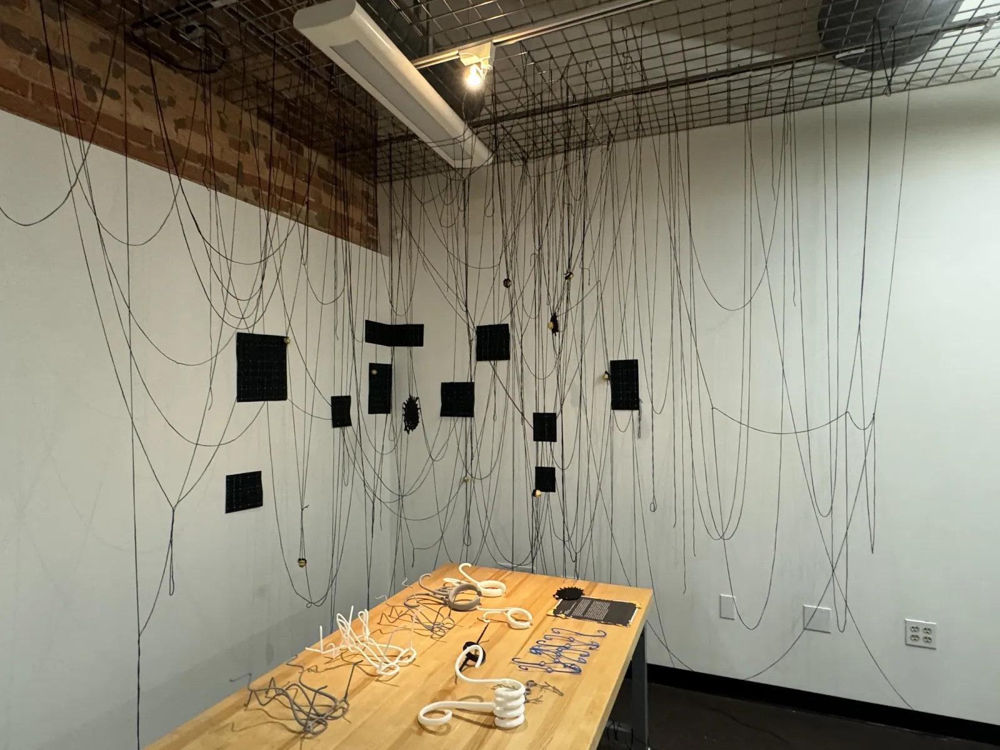
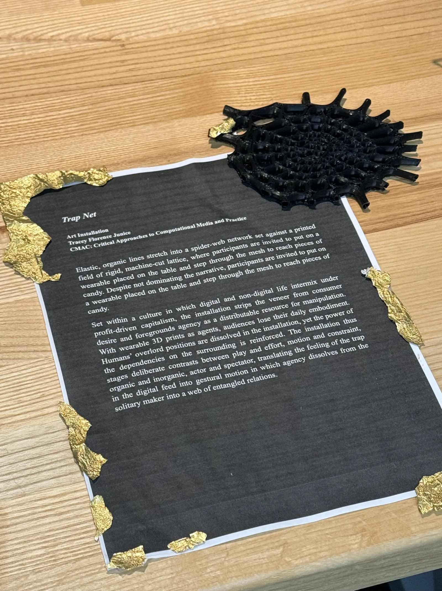
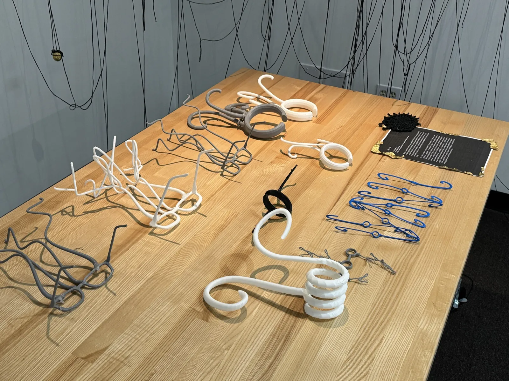
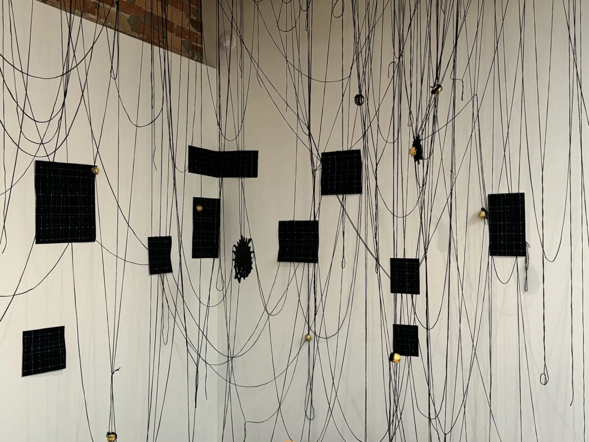
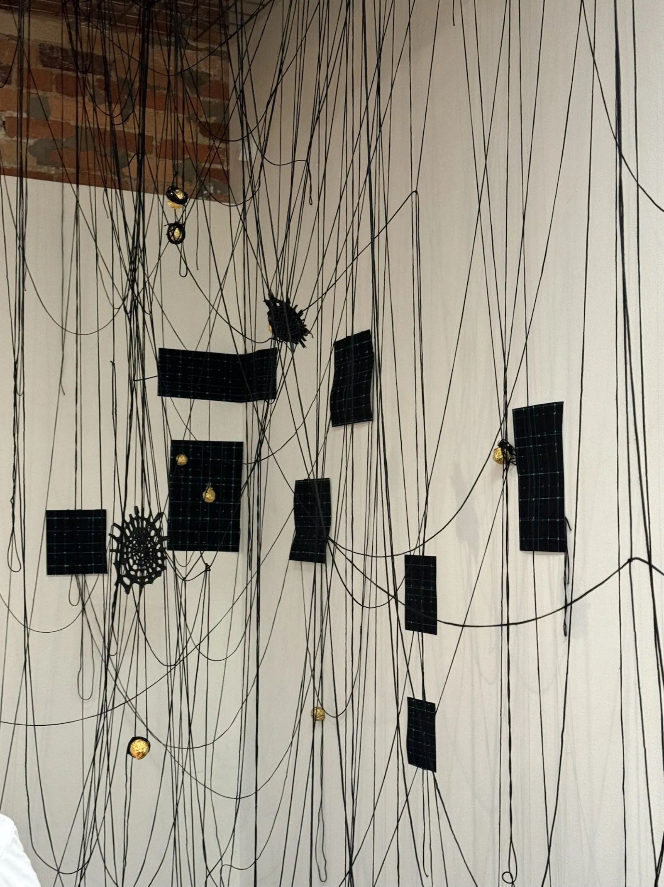
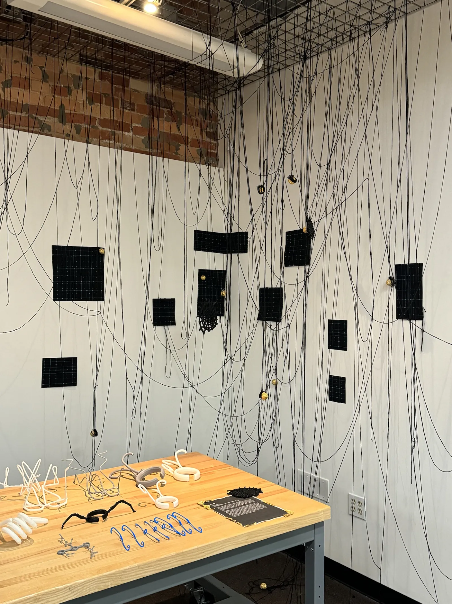
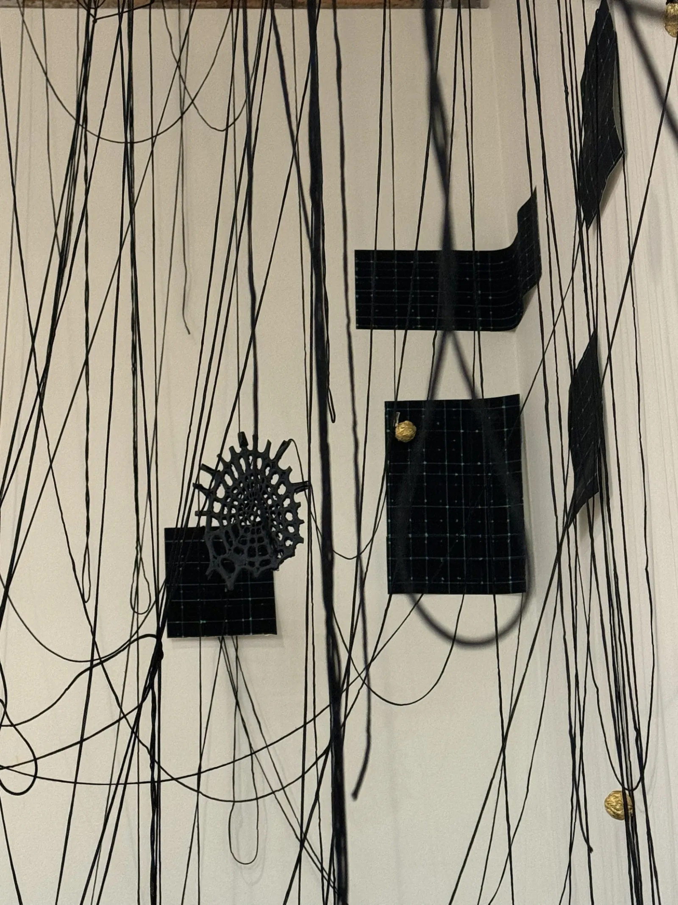
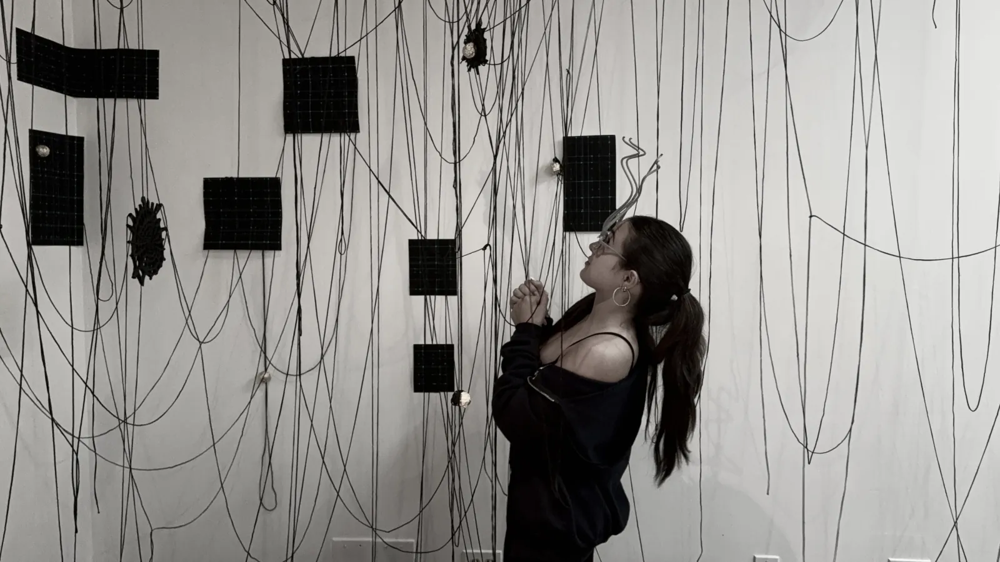
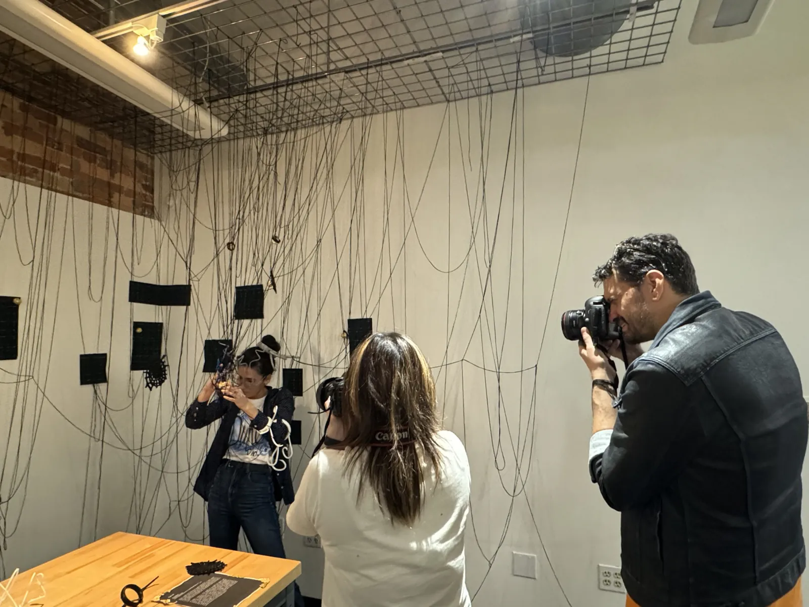

Installation / Blender / Wearable Accessory
Trap Net
A connector-themed installation that uses a Blender-designed wearable accessory to stage the feeling of being caught inside invisible systems. The net becomes a spatial metaphor for everyday traps: information pressure, social signals, desire, fear, and repeated patterns that quietly shape judgment.
01 / Spatial Field
Installation as a suspended field of traps.



02 / Structure + Detail
Objects, knots, and surfaces that make the trap visible.




03 / Audience Documentation
The work becomes active when people enter the net.


3D Files